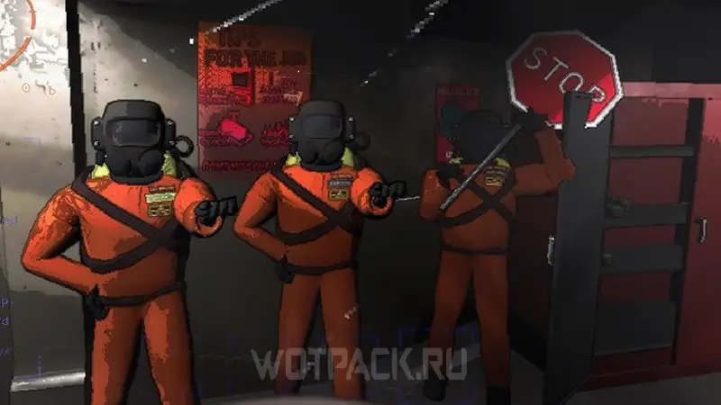
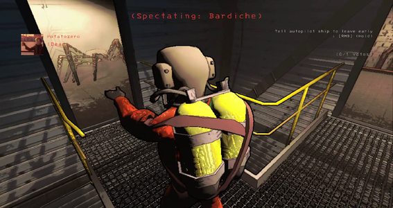
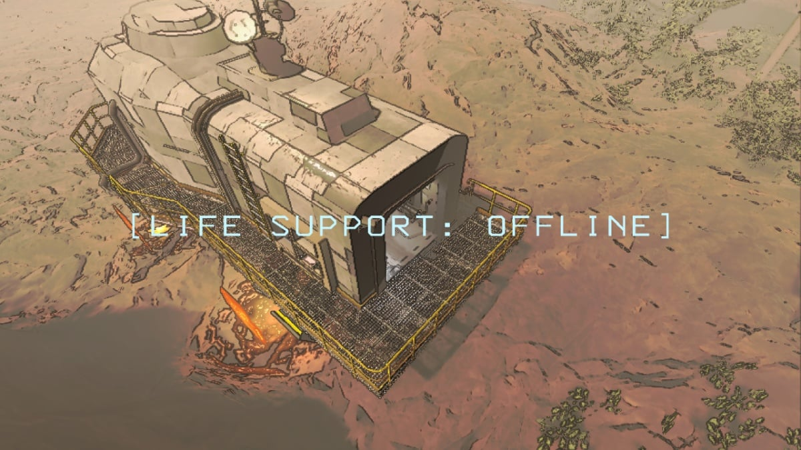
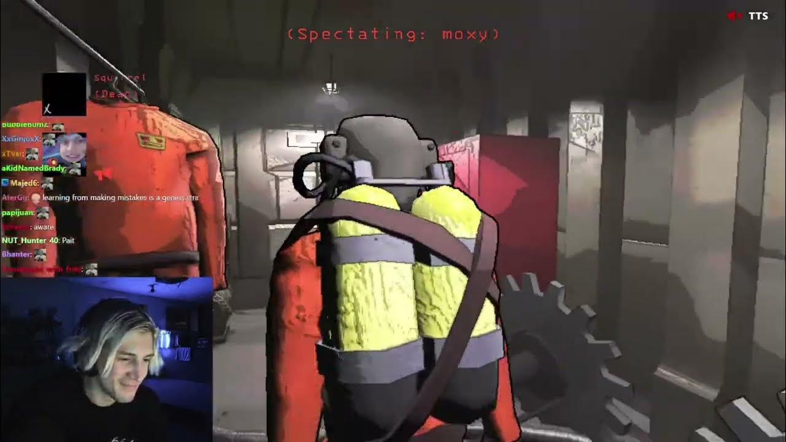

Lethal Company Wiki

Содержание
Описание
«Lethal Company» — это кооперативный хоррор, в котором вы исследуете заброшенные планеты на предмет разного барахла, в котором заинтересована "компания" - таинственная интегралактическая корпорация, на которую вы работаете. Каждые три дня компания выставляет квоту, которую необходимо выполнить. Квота каждый раз растет. Если после сдачи квоты остались свободные деньги, их можно потратить либо на более сложные экспедиции с наградами повыше, либо на всякие косметические предметы для себя и своего корабля.

Автор рассчитывал, что в игру будут играть вчетвером, по его мнению это приносит наилучший игровой опыт, однако в игре есть возможность играть и меньшим составом. А некоторые дополнения дают возможность, напротив, собирать большие лобби друзей. Из средств общения в игре только так называемый proximity chat - голосовой чат, основанный на расстоянии игроков друг от друга. К тому же, в отличие от множества других проектов, если игрок умирает, то больше не может пользоваться чатом до конца раунда, но все еще может отслеживать своих коллег

Сеттинг
Вы и команда высаживаетесь на выбранной планете. После этого вам предстоит добежать от корабля до главного входа на базу, где вы уже сможете искать ценные предметы с целью в дальнейшем притащить их обратно на корабль. как на пути к базе, так и внутри нее, вас ждет множество опасностей, интересных механик и необычного внутриигрового контента. Пока таймер неизбежно клонится к ночи, вы собираете как можно больше лута и возвращаетесь на корабль. Пока жив хотя бы один из вас, миссия продолжается, однако если умрут все, корабль улетит на автопилоте и все награбленное добро будет утеряно

Отзывы и оценки
- Steam - 98% положительных оценок, на протяжении 2 недель Первое место в топе самых продаваемых игр
- Rotten tomatoes - 95.4% оценок "recommended"
- Огромная популярность на видеохостингах: на одном только YouTube за первый месяц с момента релиза вышло более миллиона различных роликов об игре
- На несколько дней топ 1 на платформе для стриминга Twitch, каждый второй крупный стример на игровую тематику (от 1000 ежедневных зрителей) так или иначе успел поиграть в Lethal Company на стриме

Будущее проекта
Учитывая, какую сумасшедшую популярность и поддержку получил проект на старте, неудивительно, что разработчик обязался развивать его и дальше. Примечательно, что разработкой игры занимается всего один разработчик под ником Zeekerss. В последних своих постах в twitter, он обещал заниматься доработкой игры на регулярной основе, добавлять внутриигровой контент и радовать новоиспеченных фанатов. Несомненно, у проекта есть будущее, геймплейная составляющая игры затягивает, глупые и комичные механики и предметы смешат игрока, при этом общая атмосфера и монстры пробивают до мурашек. Такой контраст эмоций не позволяет устать от игры даже после нескольких десятков часов исследования, к тому же кооперативность дает неограничные возможности для создания контента и игрового опыта в целом

Поддержать автора
Поддержать автора проекта при желании можно напрямую в его соцсетях @Zeekerss или купив игру в Steam